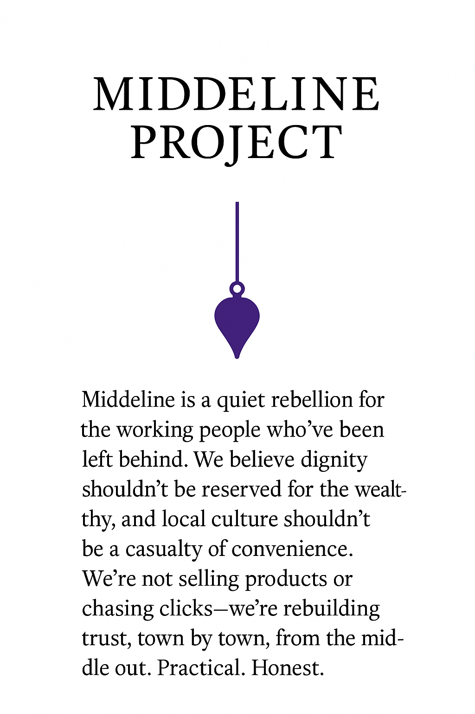

MIDDLELINE PROJECT

Middleline is a quiet rebellion for the working people who’ve been left behind.
We believe dignity shouldn’t be reserved for the wealthy, and local culture shouldn’t be a casualty of convenience.
We’re not selling products or chasing clicks—we’re rebuilding trust, town by town, from the middle out.
Practical. Honest. Unshakable.